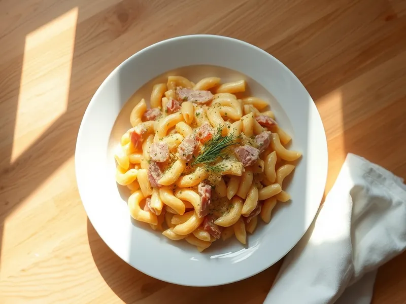

Макароны с ветчиной и сыром на сковороде
Рожки с обжаренной ветчиной и луком в сливках под тянущимся сыром
25 мин3 порц.724 ккал на порциюБ 29 · Ж 39 · У 64Русская кухня
Открыть в приложении: порции, таймеры, список покупок
Продукты на 3 порц.
- Макароны250 г
- Ветчина200 г
- Сыр твёрдый100 г
- Сливки 20%150 мл
- Лук репчатый1 шт
- Сливочное масло15 г
- Соль2 щеп.
- Перец чёрный молотый1 щеп.
- Укроп по желаниюпо вкусу
Как готовить
- Отварите макароны в подсоленной воде по времени на пачке, обычно 8-10 минут, и слейте.
- Пока варятся макароны, нарежьте ветчину соломкой, лук мелким кубиком, сыр натрите на крупной тёрке.
- В сковороде растопите масло на среднем огне, обжарьте лук 4 минуты до мягкости, добавьте ветчину и жарьте ещё 3 минуты до лёгкой румяности.
- Влейте сливки, доведите до кипения и всыпьте половину сыра. Помешивайте 1-2 минуты, пока сыр не расплавится в гладкий соус.
- Выложите макароны, перемешайте, посыпьте оставшимся сыром, накройте крышкой и держите на слабом огне 2 минуты, пока сыр не расплавится. Посыпьте укропом.
Совет. Ветчину можно заменить варёной колбасой или сосисками, а сливки разбавить молоком пополам: соус выйдет легче, но сыр всё равно его загустит.